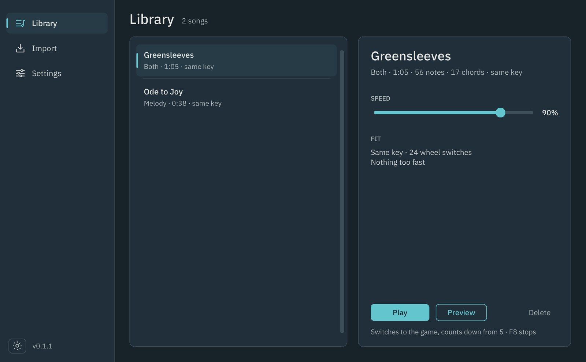
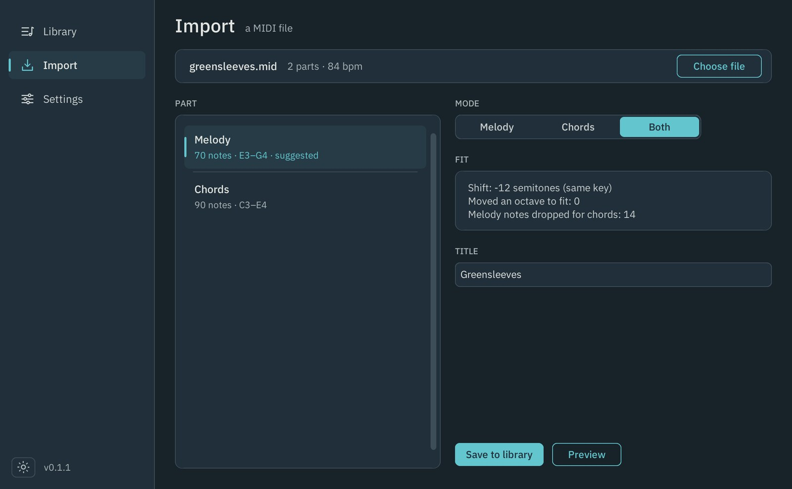
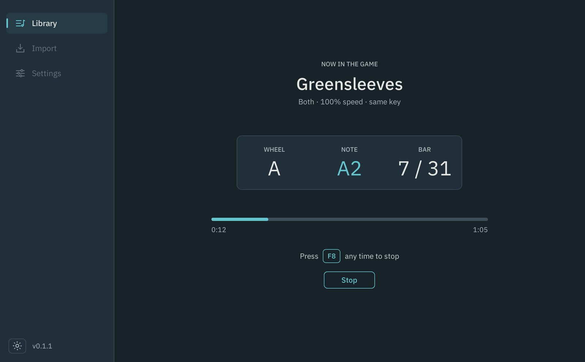

A Windows app that plays songs on the guitar in The Last of Us Part II. You give it a MIDI file, and it fits the song to the guitar, plans every move round the chord wheel, and plays it in the game in time.
It started as a script that read notes from text files, and was rebuilt from scratch as an app anyone can use without a terminal. It's free and open source, a fan-made tool not affiliated with Naughty Dog or Sony. The code is on GitHub, and the app can be downloaded from its releases page.
 Play the video: The Last Arpeggio playing Ode to Joy and Greensleeves in the game
Play the video: The Last Arpeggio playing Ode to Joy and Greensleeves in the game
- 5 chord wheels
- 6 directions each
- 30 notes, E2 to A4
- 24 chords
How it fits together
Every input is turned into one song format first, so the planner and the player never need to know where a song came from.
The app
Library
Every saved song, with its mode, length and key. A speed slider plays any song slower without changing the file, and the fit panel re-plans at that speed straight away, so you can see the moment a fast passage becomes playable.
Preview plays the plan through the speakers, so a song can be checked without the game open.

Import
Choose a MIDI file, then pick a part and a mode. Drums are hidden, and the part that looks most like the melody is marked as suggested.
The fit panel shows how the song was moved to suit the guitar. If any spots are too fast, it asks before fixing them: thin out, slow down, or keep.

Now playing
After Play, the app brings the game to the front and counts down. While it plays, this screen shows the wheel, the note or chord and the bar as they happen.
The sidebar locks until the song ends, because any click in the app would take focus away from the game. When it's over, the result stays up with Play again, which is handy while tuning the settings.

Technical breakdown
The game reads a guitar from a wheel and six keys. The app's job is to turn a song into the right sequence of those, early enough that each sound lands on the beat.
The guitar as data
Mapped out, the guitar covers 30 notes from E2 to A4 and all 24 major and minor chords, kept in one data file the rest of the app reads. Most notes can be played from several wheels and directions, and that choice is what the planner works with.
Reading a MIDI file
- PartsRead with mido and split by track and channel, so a file with everything in one track still lists every instrument. Tempo changes are kept.
- Find the melodyEach part is scored on how often it plays one note at a time, how high it sits, and whether its name sounds like a lead. The best is suggested.
- MelodyNotes are snapped to a sixteenth-note grid. Where several start together, the highest is kept, since the tune is usually on top.
- ChordsEach beat's notes are matched against all 24 chords. Matching notes score, extra notes cost, and a root in the bass earns a bonus.
Both mode takes chords once a bar with the melody in between, and drops a melody note that lands on a chord change, since the guitar can't strum and pluck at the same moment.
Fitting a song to the guitar
Choosing the key
Every shift from two octaves down to two up is tried. Octave shifts keep the song's key, so they win unless a key change keeps noticeably more notes on the guitar. Ties go to the fewest wheel switches.
Folding stray notes
Any note still off the guitar is moved by octaves until it fits, rather than being dropped.
Too fast
Thin out removes the note nearest the first spot that's too fast, re-plans and repeats, so it drops only what it has to. Slow down lowers the tempo in 5 percent steps.
Planning and playing
The route round the wheel
Every note has a few places it can be played from. The planner finds the cheapest path through them with dynamic programming, where the cost of each move is the time it takes: wheel taps, then a flick out from the centre.
Timing
Each move starts early by its lead time, so the sound lands on the beat. The player sleeps in short naps and waits out the last few milliseconds exactly against a high-resolution clock, records how late each sound landed, and reports the average.
Stopping
A global hotkey stops playback at any moment, set by pressing the key or combo you want. The app always finishes back on the C wheel with the mouse centred, ready for the next song.
Preview
A small synth in NumPy: each string is six harmonics with their own decay and a 4 ms attack, and chords are spread across six strings 15 ms apart, like a real strum.
Design decisions
The app should be easy for anyone to run, and honest about what the guitar can and can't do.
- Mouse over a virtual controller
- The game locks the hidden mouse to the wheel, so a flick out and back picks any chord reliably, even at speed. That kept the app free of extra drivers.
- MIDI only
- Tabs and chord sheets were planned as inputs, but MIDI covers both and is far easier to find. One input done well beat three done loosely.
- Ask before fixing
- A song that's too fast is never changed silently. Thin out is suggested because it usually costs one or two notes, where slowing down changes the whole feel.
- Pick the window, don't type it
- The game's window title can vary. Settings lists the windows that are open and lets you pick the game, and the app also finds it by name on its own.
- A folder, not a single file
- A single .exe unpacks itself on every launch and gets flagged by antivirus more often. A folder starts at once and keeps the songs and settings beside the app.
- No music from the game
- The app ships with two public-domain songs I arranged for it. Songs from the game are copyrighted, so the README explains how to play the main theme from a MIDI file you have instead.
Tried and dropped
A frosted window
A see-through acrylic backdrop for the sidebar was built, but it only works on Windows 11, so the app kept its solid colours in the end.
Fading between pages
Tk can only fade whole windows, so a fade meant laying a second window over the page. It drifted when the app was moved, and a 100 ms effect wasn't worth that.
How it was built
- Data and inputThe guitar mapped out, then the mouse and keys tested in the game until every chord landed.
- Songs and planningThe song format, then the planner and the player, checked step by step with small scripts before any interface existed.
- MIDI and fittingImport, the three modes, key fitting, the too-fast fixes and the speaker preview.
- App and releaseThe interface, styled to match this site, then a Windows build, the tile and the app icon, which is the line art of this page's tile.
Credit
The first version, a script that played songs from text files, was built by me. The 2026 version was rebuilt with AI-assisted scripting, directed, tested and tuned by me in the game.